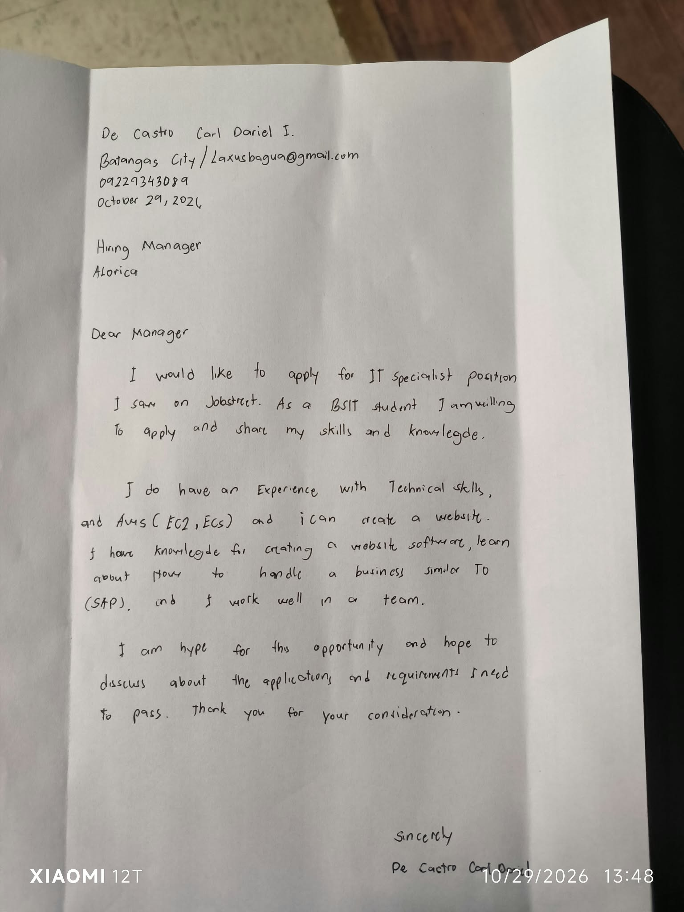
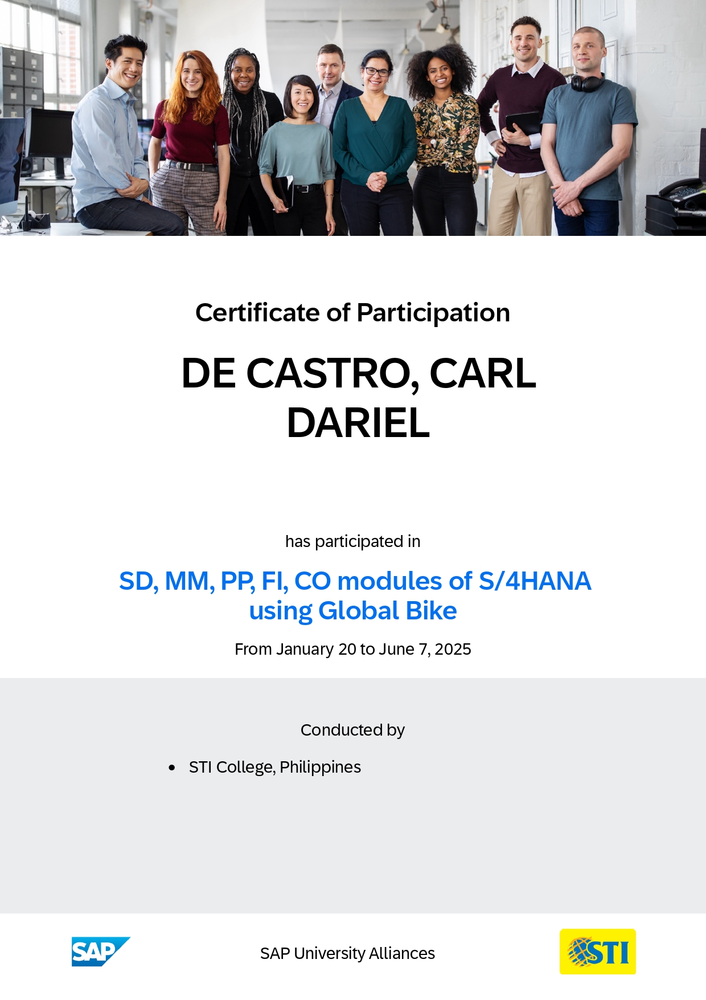

BS Information Technology • 4th Year Student
Aspiring IT Specialist and Web Developer
I am a dedicated 4th-year Bachelor of Science in Information Technology student at STI College Batangas. I enjoy turning ideas into functional web software and have hands-on experience working with cloud services (AWS EC2 & ECS), web development, and business workflow systems (SAP concepts).
I thrive in collaborative team environments and am actively seeking opportunities as an IT Specialist or junior developer where I can apply my technical knowledge, learn continuously, and contribute to meaningful projects.
HTML5, CSS3, JavaScript, React, Node.js, PHP, and MySQL for building responsive websites and web software.
Experience with Amazon Web Services (AWS EC2, ECS), server setup, and cloud deployment workflows.
Hardware/software troubleshooting, biometric system integration, and understanding of business operations (SAP concepts).
Strong team player with experience in agile academic projects, system documentation, and client communication.
A full-stack web application developed to automate employee attendance tracking via biometric scanners and calculate dual-structure payroll accurately for construction supply operations.
Tech Stack: Web Technologies, Node.js, Database Management, Biometric Hardware Integration
Bachelor of Science in Information Technology (BSIT)
Senior High School Graduate
Junior High School
Primary Education
Dear Hiring Manager,
I would like to apply for the IT Specialist position I saw on JobStreet. As a 4th-year BS Information Technology student, I am eager to apply and share my technical skills and knowledge with your team.
I have hands-on experience with technical support, cloud infrastructure (AWS EC2 and ECS), and web software development. Additionally, I have studied business process management concepts similar to SAP and thrive in collaborative team environments.
I am excited about this opportunity and look forward to discussing my application and qualifications further. Thank you for your time and consideration.
Sincerely,
Carl Dariel I. De Castro

Interested in working together or discussing IT opportunities? Feel free to reach out!
Successfully completed training and participation in SD, MM, PP, FI, and CO modules of S/4HANA using Global Bike at STI College, Philippines (January 20 – June 7, 2025).

Click image to view full size